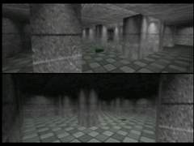
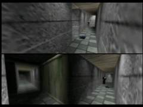
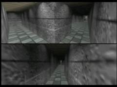

- Taille - Grand, mais en fait Petit, car tout est étiré. De longs Couloirs, 2 Salles à Colonnes plus ou moins Grandes. C'est un Niveau Standard. Pour plus d'infos, voir Stack et Library !
- Décor - Très sombre par endroits, plutot clair dans la Partie Kaki du Niveau. Un peu de Gris par-ci par-là. Vous l'aurez compris, ce Niveau est SOBRE. Et un peu déprimant, mais bon après tout c'est une Cave hein ?
- Armes - Idéal pour toutes les Armes. Génial pour les Couteaux de Lancer, because longs couloirs. C'est la Fête aux Roquettes de meme. Les Pistols sont sympas aussi, vu les Longs Couloirs.
- Camping - Y a un mince passage TOUT noir très agréable pour rester à l'Abri et prunifier un peu tout le Monde qui passe. Il y a les 2 sorties bloquées qui font d'excellents nids ! Y a aussi les sortes d'Alcoves Kaki qui sont un bon endroit. Ceux qui passent vite ne vous verront pas et hop, un chargeur dans le dos ni vu ni connu !


Les coins à connaître
- Le Couloir Noir. Certains joueurs ne savent meme pas qu'il existe, alors profitez-en !
- La Salle aux Alcoves. Très agréable pour se cacher en attendant une Proie...
- Le long couloir, idéal pour les Roquettes, et à coté la Petite Salle aux Piliers, bien vicieuse si on sait bien s'y cacher...






- Les Salles aux Colonnes sont d'excellents lieux pour les courses poursuites en Power Weapons.
- Le Couloir du Gilet, lieu de toutes les convoitises !! Ruez-vous dessus !!!
- Les Passages reliant les 2 Salles de Colonnes. Pas trop fréquentés...